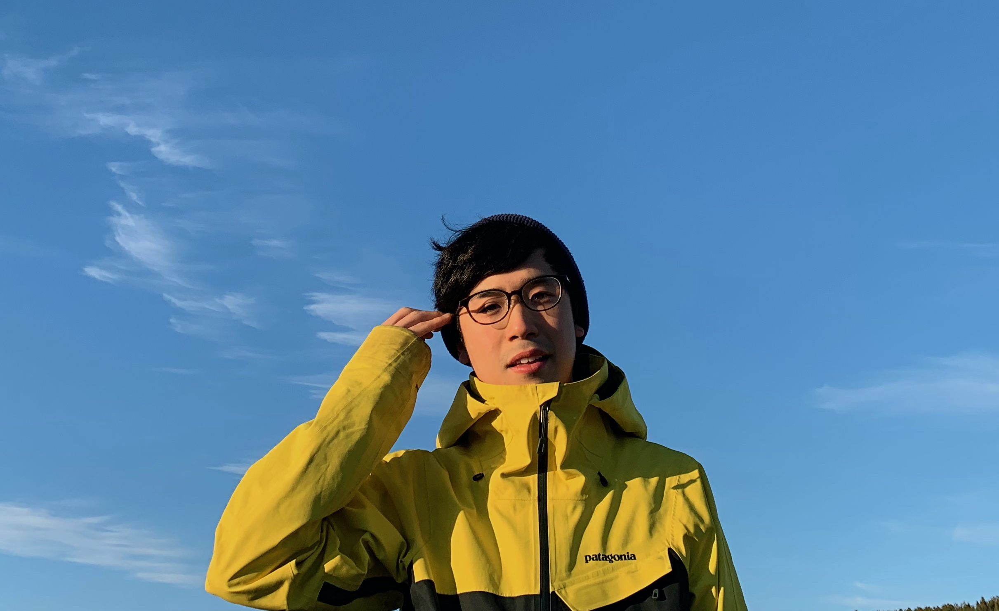

Research interests
Education
Skills
Awards
Contact
Kei Yamamoto
Welcome to my page!
I am a senior student at Deapartment of Mechanical Engineering, Faculty of Science and Technology,
Keio University, Japan.

Research interests
- Fluid Mechanics
- Multiphase Flow
- Cavitation
Education
- Gyosei Senior High School, Tokyo, Japan - from 2012 to 2015.
- Keio University, Deaprtment of Mechanical Engineering, Japan Ando Lab - from Apr, 2016 to Mar, 2020.
- University of Oslo, Faculty of Natural Science and Mathematics as an exchange student, Norway - from Aug, 2018 to Jul, 2019.
Skills